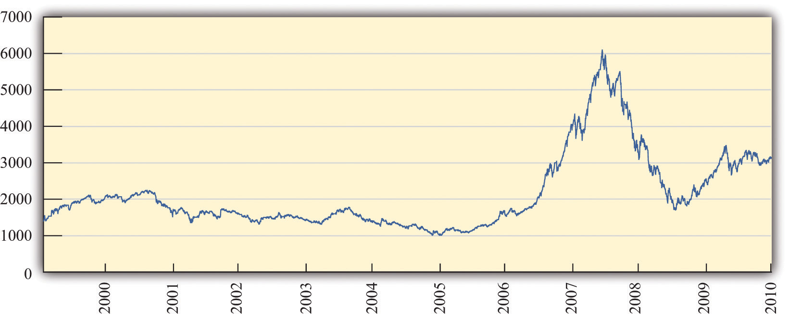

In 2006 and 2007, the financial district in Shanghai, China, was in a frenzy. Figure 10.1 "Shanghai Stock Exchange Index" shows the value of stocks in that market since its inception in 2000. Starting in early 2006, the value of stocks traded on this market exploded. The market rose by 130 percent in 2006; by May 2007, it was up over 50 percent for that year.See http://finance.yahoo.com/q/hp?s=000001.SS&=00&=1&=2006&=11&=31&=2007&=d&=66&=330. The market peaked in late 2007 and is currently at about 50 percent of that value. A lot of money was made by those who invested in the Shanghai market. And unfortunately a lot of money was lost.
Figure 10.1 Shanghai Stock Exchange Index
This figure shows the closing prices on the Shanghai stock exchange between January 2000 and April 2010. Stock prices rose rapidly from 2006, peaking in October 2007, but decreased substantially over the next year. In late 2009, stocks rebounded again.
These gains attracted many investors. Funds from abroad poured into Shanghai. The savings accounts of Chinese households were another source of investment funds. From a People’s Daily Internet article posted on May 13, 2007, we learn the following: “More than 70 billion yuan (9.1 billion U.S. dollars) was transferred from savings accounts in Shanghai to stock trading accounts in the first four months of this year, the Shanghai branch of the People’s Bank of China estimated on Saturday. In April alone, [savings deposits denominated in Chinese currency] with Chinese banking institutions decreased by 8.5 billion yuan (1.1 billion U.S. dollars).”“Chinese Pour Savings Deposits into Stock Market,” People’s Daily, May 13, 2007, accessed March 14, 2011, http://english.peopledaily.com.cn/200705/13/eng20070513_374113.html.
During May 2007, stories circulated about households spending many hours carefully evaluating individual stocks and market returns. At the same time, it appeared that many relatively uninformed individuals were simply betting on the market, gambling on a quick return.
We said that some investors made money in the Shanghai market. Does that mean there is a lot of money to be made by investing in that market? These phrases sound similar but mean very different things. It is one thing to look back at a market and say you could have made money investing in that market. It is quite another to forecast that you will be able to make a high return in a market in the future. Investors who were attracted to the market in late 2007 had a very different experience: they lost a lot of money. Those who came into market in late 2008 were again able to profit as the market value rose over the following year.
In this chapter, we study the markets for different kinds of assets. Assets include stocks—such as are traded in Shanghai, on Wall Street, and in other financial centers around the globe—but, as we will see, there are many other kinds of assets as well. Information on assets is easy to obtain. If you open almost any newspaper, the business section contains an enormous amount of detailed information on stocks sold in a variety of markets. That same section will contain information on bonds, which are another type of frequently traded asset. Part of our interest in this chapter is defining these assets more precisely. The terms stocks and bonds are used commonly, but we want to understand exactly what these assets are and how they are traded.
As we wrote this chapter, we had no idea whether we, too, should be putting our personal savings in the Shanghai stock exchange or in some other market around the globe. In the middle of 2007, it looked as if the surge in the Shanghai market was over. Market participants were concerned that the time of high gains had ended. Yet by November 2007, market values had again started to escalate. And then, as we said, the market peaked in late 2007 and decreased rapidly for the next year. This is part of the story of asset markets. They are extremely volatile and unpredictable. When you see these high returns in Shanghai and other markets, you might wonder:
“Can I get rich by trading stocks and bonds?”
This chapter begins with a walk down a fictionalized Wall Street, where we describe various kinds of assets. We focus mainly on financial markets, although we will look at other assets as well. Financial markets are familiar to many of us from the financial pages of newspapers or reports on the evening news. Such markets provide a link between borrowers and lenders (Figure 10.2). Many of us are borrowers from banks, perhaps because we have a student loan, a car loan, or a mortgage for a house. Much of what we borrow from banks comes from deposits placed in banks by other households. Firms also borrow in the financial markets. They issue stock and sell bonds in financial markets to finance their investment in new factories and machines.
Figure 10.2
Financial markets link borrowers and lenders.
We then turn to a discussion of the pricing of assets. We begin by thinking about an unusual asset: a fruit tree. A fruit tree gives us a certain amount of fruit each year, and the value of the tree depends on the value of the fruit it produces. We explain how to calculate the value of a fruit tree that lives for several years and yields an uncertain crop, and we show how exactly the same principles apply to the valuation of stocks, bonds, houses, and other assets. Finally, we explain why—if financial markets are functioning well—the price of an asset will equal its value.
Finally, we ask whether it is easy to make money by trading assets. We explain that the gains and losses from trading assets are based on two factors: (1) luck and (2) the skill of investors who quickly recognize profit opportunities before others notice these opportunities. If financial markets are functioning well, then it is very difficult for the casual investor to make money consistently by trading financial assets. And even if—as many believe—financial markets do not function perfectly, this still does not mean that there is easy money to be made.